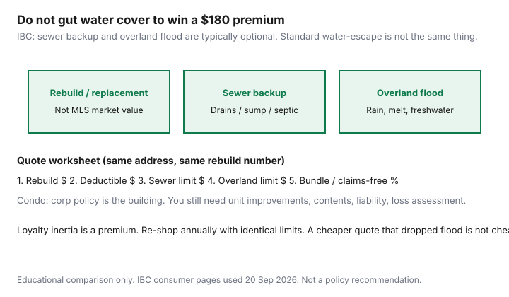

Housing · Canada
How to shop home insurance in Canada without gutting coverage
Homeowners renew home insurance the way they renew a streaming login: auto-pay, eyes closed, until a basement flood that was never on the declarations page. Premiums have been loud. Coverage gaps are quieter. Shopping without gutting cover means lining up the same rebuild number and the same water endorsements across a broker, a direct writer, and last year’s incumbent — then picking a bill you can stand to call at claim time.
This is Canadian home and condo comparison education. It is not a quote and not a recommendation of Sonnet, TD Insurance, or anyone else. Pair it with condo vs freehold monthly stacks so insurance sits beside the mortgage, not under “misc.”
Disclosure: Insurance comparison tools are an offer type. Saving Optimizer may earn a commission if we later add partner links. We do not currently claim insurer or broker partnerships. We do not sell policies. This is comparison education, not insurance advice.
Key takeaways
- Insure rebuild / replacement, not the MLS price. Land does not burn; the house does.
- IBC: sewer backup and overland flood are typically optional and separate. Standard water-escape is not flood.
- Raise the deductible only to an amount you can pay in the same month as the claim.
- Ask for alarms, claims-free, bundling, and loyalty — then re-shop the same limits annually.
- Condo owners: the corporation policy is not your kitchen reno, your contents, or your loss assessment.
Rebuild cost vs market value: get the right number
Market value is what a buyer might pay, including the lot. Rebuild cost is labour, materials, debris, and often by-law upgrades to put a similar building back. A $1.1 million Toronto semi can have a $650,000 rebuild and a $450,000 lot — or a higher rebuild after 2021–2026 construction inflation. Using the sale price as the dwelling limit is how people underinsure the structure or overpay for land they cannot lose in a fire.
Ask the intermediary for the rebuild worksheet (square footage, finishes, attached garage, custom kitchen). Update it after a renovation. A cheap premium on a stale $380,000 dwelling limit is not a win if the rebuild is $620,000.

Water damage, sewer backup, and overland flood add-ons
Insurance Bureau of Canada’s water and flood consumer pages are blunt: a standard policy typically covers certain sudden internal water events and typically does not cover sewer backup or overland flooding unless you buy those endorsements. Coastal storm surge is usually out. Groundwater and seepage may be a third conversation.
- Water escape: burst pipe, overflowing tub — often in, subject to wording.
- Sewer backup: water or sewage the wrong way through drains, toilets, sump, or septic. Optional. Own limit and deductible are common.
- Overland / flood: freshwater from heavy rain, rapid melt, or overflowing lakes and rivers entering through walls, doors, or the foundation. Optional, risk-priced, not always offered.
Having sewer backup does not buy overland. A “water bundle” still needs you to read the two limits. A $180 cheaper premium that deleted both endorsements is how a basement claim becomes a home-equity conversation. We do not price endorsements here; they vary by postal code and flood maps.
Deductible strategy for middle-aged households
A higher deductible is a discount you pay yourself when something breaks. If the emergency fund is $4,000 and the roof deductible would be $2,500, that can be rational. If the deductible is $5,000 and the next car repair is already on a card, you did not save — you leveraged. Water endorsements sometimes carry a separate deductible. Write both numbers on the worksheet. Households in the 40–60 age band often have the cash to take a higher all-perils deductible and should still keep water limits honest.
Discounts: alarms, claims-free, bundling, loyalty checks
Ask, every year, in the same email as the quote:
- Monitored alarm or smart-water shutoff — what is filed, and what proof they want.
- Claims-free years on this policy and any auto you might bundle.
- Multi-policy (home + auto) and multi-property if you have a cottage.
- Loyalty or tenure — then compare an outside quote on the same rebuild and water limits so loyalty is a number, not a mood.
Winter-tire and telematics discounts are auto products (see auto shopping). Do not paste them onto a dwelling policy.
Annual re-shop vs loyalty inertia
Put a reminder 45 days before renewal. Request the incumbent’s renewal offer in writing. Run one broker and one direct or aggregator pass with the same dwelling limit, same deductibles, same sewer and overland limits, same scheduled items. Switch mid-term only if you understand short-rate or earned-premium rules — FSRA’s auto habit (“don’t cancel just to chase a rate”) is a useful caution on property too. Staying can win. Sleepwalking cannot.
Condo unit owners: what the corp policy does not cover
The corporation or strata policy is the building and common property. Your unit insurance is typically improvements and betterments (the kitchen you paid for), contents, personal liability, and additional living expenses. Loss-assessment or deductible-assessment cover matters when the corp has a large water deductible and votes it out to owners. Read the status certificate or Form B for the corp’s insurance and deductibles before you treat a $28/month unit policy as “fully covered.” A “low fee” listing with a thin reserve is also a future special — budget it on year-one cash.
Quote comparison worksheet
| Line | Incumbent | Broker quote | Direct / other |
|---|---|---|---|
| Rebuild / dwelling $ | |||
| All-perils deductible | |||
| Sewer backup limit + deductible | |||
| Overland / flood limit + deductible | |||
| Annual premium (bundle noted?) |
If a quote wins only because a column is blank, it did not win. Renters who still need a certificate should use the tenant comparison page instead of this rebuild worksheet.
Sources & date stamps
- Insurance Bureau of Canada, water damage / flooding and insurance consumer pages — sewer backup and overland flood typically optional; coastal surge typically excluded (used 20 Sep 2026).
- CMHC condominium buyer FAQs — corporation vs unit responsibilities at a high level (used 20 Sep 2026).
- Saving Optimizer, condo fee red flags and condo vs freehold monthly cost — document and stack context.
Frequently asked questions
Is rebuild cost the same as what my house would sell for?
No. Market value includes land. Rebuild / replacement cost is what it would take to reconstruct the building to the policy’s standard after an insured loss. Insuring to the MLS number can leave you short of lumber, labour, and code upgrades — or can overstate the building if the lot is most of the price. Ask for a rebuild worksheet, not a Zillow-style guess.
Does standard Canadian home insurance cover flooding?
Usually not the flood people mean. Insurance Bureau of Canada consumer pages treat sewer backup and overland (freshwater) flood as optional endorsements. Sudden internal water escape (a burst pipe) is a different peril. Coastal storm surge is typically excluded. Having one water add-on does not buy the others.
What does the condo corporation policy not cover?
The corp / strata policy is generally the building, common elements, and the corporation’s liability. You still need unit improvements and betterments, your contents, your liability, and often loss-assessment cover if the corp deductible or a special hits owners. Read the status certificate or Form B beside the quote.
Should I stay loyal to save money?
Loyalty is a discount some insurers file. It is also how households skip a $200–$400 re-shop. Run the same rebuild number and the same water limits through at least one other channel every year. Keep the incumbent if they win on identical cover.
Is this insurance advice?
No. Comparison education only. We do not sell policies or recommend an insurer. Use a licensed intermediary and your province’s regulator materials.